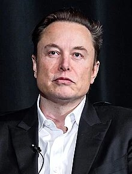

Info
Mark Elliot Zuckerberg (White Plains, Nueva York; 14 de mayo de 1984) es un programador y empresario estadounidense, uno de los creadores y fundadores de Facebook (desde 2021, Meta Platforms) y la red social homónima, y su actual presidente. Para desarrollar la red, Zuckerberg contó con el apoyo de sus compañeros de la Universidad de Harvard, el coordinador de ciencias de la computación y sus compañeros de habitación Eduardo Saverin, Dustin Moskovitz y Chris Hughes.
Info
Elon Reeve Musk (Pretoria, 28 de junio de 1971), conocido como Elon Musk es un empresario, inversor y magnate sudafricano que también posee las nacionalidades canadiense y estadounidense. Es el fundador, consejero delegado e ingeniero jefe de SpaceX; inversor ángel, director general y arquitecto de productos de Tesla, Inc.; fundador de The Boring Company; cofundador de Neuralink y OpenAI, aunque ya no tiene más participación en esta última por desacuerdos en el rumbo de la empresa. Además de ser el director de tecnología de X Corp..5 Con un patrimonio neto estimado en unos 207 mil millones de dólares en junio de 2023, Musk es la persona más rica del mundo según el índice de multimillonarios de Bloomberg y la lista de multimillonarios en tiempo real de Forbes.
Info
Anthony Frank Hawk (San Diego, California; 12 de mayo de 1968), más conocido como Tony Hawk, es un famoso skater profesional y actor estadounidense. Es considerado el mejor patinador del mundo sobre vert (half-pipe) además de uno de los más versátiles y habilidosos, y también es considerado uno de los mejores en el vertical skateboarding, debido a su gran habilidad y su frecuente práctica.
 (1).jpg)